智能体引论
Introduction to Agents and Agent Architectures
致谢 (Acknowledgements)
内容贡献者 (Content contributors)：
Enrique Chan、Mike Clark、Derek Egan、Anant Nawalgaria、Kanchana Patlolla、Julia Wiesinger
策划与编辑 (Curators and editors)：
Anant Nawalgaria、Kanchana Patlolla
视觉设计 (Designer)：
Michael Lanning
1. 从预测性 AI 到自主智能体 (From Predictive AI to Autonomous Agents)
人工智能正在经历深刻的范式变革。多年以来，行业的焦点一直停留在擅长处理被动、离散任务的模型上：回答一个问题、翻译一段文本，或者根据给定的提示词生成一张图片。这种范式虽然功能强大，但每前进一步都需要人类的持续介入与实时指令。如今，我们正在见证一场根本性的转折——从单纯预测内容或生成内容的 AI，迈向一类具备自主问题求解和任务执行能力的全新软件范式。
这一崭新前沿的核心便是 AI 智能体（AI Agents）。智能体绝非静态工作流中的一个普通 AI 模型；它是一个完整的应用程序，能够为了达成特定目标而自主制定计划并采取行动。它将大语言模型（LM）的推理能力与调用外部环境的行动能力有机结合，从而能够胜任模型单独无法处理的复杂、多步骤任务。其最核心的飞跃在于：智能体能够独立自主工作，自行推演出达成目标所需的后续步骤，而无需人类在每一步都给予微观指导。
本文是五篇系列白皮书的第一篇，旨在为从概念验证（PoC）阶段迈向构建稳健、生产级智能体系统的开发者、架构师和产品负责人提供正式的权威指南。虽然搭建一个简单的演示原型非常容易，但确保其安全性、质量与可靠性却面临重大工程挑战。本文构筑了全面的理论与工程基石：
- 核心解剖 (Core Anatomy)：将智能体拆解为三大核心组成要素：负责推理的模型 (Model)、可供调用的工具 (Tools)，以及居中调度的编排层 (Orchestration Layer)。
- 能力分级体系 (A Taxonomy of Capabilities)：将智能体系统从简单的连接型求解器一直分类到高度复杂、协作运行的多智能体系统。
- 架构设计 (Architectural Design)：深入探讨从模型选型到工具实现等每个组件的实际设计考量。
- 面向生产落地 (Building for Production)：建立起用于评估、调试、防护和管理智能体系统的 Agent Ops（智能体运维体系），实现从单实例到具备企业级治理的集群化扩展。
在先前的《Agents 白皮书》1与《Agent 伴读指南》2的基础上，本指南提供了成功构建、部署和管理新一代智能应用所必需的基础概念与战略框架，这些应用能够通过“推理、行动与观察”来达成预期目标3。
2. AI 智能体概述 (Introduction to AI Agents)
用最通俗易懂的话来说，AI 智能体可以定义为模型、工具、编排层和运行时服务的集合体，它在循环循环中调用大语言模型来达成既定目标。这四大要素构成了任何自主系统的核心架构：
- 模型 (The Model - “大脑”)：核心大语言模型（LM）或基础大模型，作为智能体的中央推理引擎，负责处理信息、评估可行选项并做出决策。模型的类型（通用大模型、微调模型或原生多模态模型）决定了智能体的认知能力上限。智能体系统本身，本质上就是 LM 输入上下文窗口（Context Window）的终极策划管理者。
- 工具 (Tools - “双手”)：工具是连接智能体推理大脑与物理外部世界的机制，赋予其超越单纯文本生成的实际行动能力。工具包括 API 扩展、代码执行函数以及用于访问实时、事实性数据的数据存储（如数据库、向量知识库等）。智能体系统允许大模型规划应该调用哪个工具、自动执行该工具，并将工具的返回结果注入下一次大模型调用的输入上下文中。
- 编排层 (The Orchestration Layer - “中枢神经系统”)：管理智能体运行主循环的控制中枢。它负责协调任务规划、记忆（状态机保持）以及具体推理策略的执行。该层利用提示词工程框架与结构化推理技术（如 思维链 Chain-of-Thought4 或 ReAct 模式5）将复杂宏大目标拆解为分步环节，并决定何时进行逻辑思考、何时调用外部工具。编排层同时负责赋予智能体“记忆”能力。
- 部署与运行时 (Deployment - “身躯与双腿”)：在个人笔记本上运行智能体虽然对原型验证十分高效，但只有将其推向生产部署，才能使其成为可靠、高可用的生产服务。这涉及将智能体托管在安全、可弹性伸缩的服务器集群上，并与监控、日志采集、安全合规等关键生产服务集成。部署完成后，用户可以通过直观的图形前端访问智能体，其他智能体也可以通过 A2A（智能体间通信协议）API 进行程序化调用。
归根结底，构建生成式 AI 智能体代表了一种全新的软件求解范式。传统开发者就像“泥瓦匠”，必须精确编写每一块砖、每一行确定性的逻辑步骤；而智能体开发者则更像“导演”：你不再为每个微观动作编写显式死代码，而是搭建舞台场景（编写核心指引与 System Prompt）、选定参演演员（配置工具与 API 接口），并提供必要的剧本上下文（提供数据与先验记忆）。开发者的首要任务，转变为引导这个拥有自主行动力的“演员”呈现出完全符合预期的精彩演出。
在实践中你会迅速体会到，大语言模型最大的优势——其令人惊叹的灵活性——恰恰也是开发者面临的最大痛点。大模型无所不能的泛化能力，使得你很难迫使它每一次都完全可靠、分毫不差地只做某一特定任务。我们过去所说的“提示词工程（Prompt Engineering）”，如今已经演变为更全面深度的“上下文工程（Context Engineering）”，其核心就是精心编排输入给大模型的上下文。对于任何一次模型调用，我们都需要输入系统指令、参考事实、可用工具定义、Few-shot 示例、会话历史、用户画像等——把恰到好处的信息填满上下文窗口，以获得理想输出。智能体，本质上就是通过操纵管理大模型输入来实现特定业务产出的软件系统。
当系统出现异常时，调试变得至关重要。“Agent Ops（智能体运维）”重新定义了经典的度量、分析与系统优化闭环。通过追踪记录（Traces）和日志，开发者可以窥视智能体内部的完整“思维过程轨迹”，从而精准定位其在何时偏离了既定路径。随着底层模型不断升级和工程框架日趋完善，开发者的核心角色就是注入行业领域知识、界定清晰人格边界，并与实际业务工具进行无缝整合。必须牢记的是：全方位的科学评估与测试验证，其影响力往往远远超过最初写下的那句提示词。
当一个智能体被精确配置上清晰明了的指令、稳定可靠的工具、充当记忆的整合上下文、优质的用户界面、卓越的规划求解能力以及通用的常识认知，它就彻底超越了传统的“工作流自动化（Workflow Automation）”，开始展现出一个高效、敏捷适应、极其出色的团队数字化新成员的特质。
3. 智能体问题求解流程 (The Agentic Problem-Solving Process)
我们将 AI 智能体定义为一个以目标为导向、集成了推理模型、可操作工具与控制编排层的完整应用。最简洁的描述就是：“在闭环循环中利用工具完成既定目标的语言模型”。
那么，这套系统在真实场景中究竟是如何运转的？从接收到人类的一句话请求，到最终交付完工成果，智能体内部经历了怎样的完整旅程？
在其核心机制中，智能体依托一个持续迭代的循环周期来达成目标。虽然在真实业务中这一循环可以变得极为精巧复杂，但正如《Agentic System Design》6一书中所详尽阐述的，它可以抽象提炼为 五个基础步骤：
- 获取任务 (Get the Mission)：流程始于一个明确、高维度的目标。该任务可以来自人类用户的直接输入（例如：“帮我团队规划安排参加下周技术大会的差旅”），也可以来自自动化事件触发（例如：“系统收到了一个新的 P0 级客户工单”）。
- 扫描环境 (Scan the Scene)：智能体感知所处环境以收集必要的上下文。这涉及编排层调取可用资源：“用户的具体诉求是什么？”、“我的短期与长期记忆中有哪些记录？我之前是否处理过该任务？用户上周是否给过偏好要求？”、“我的可用工具箱里能访问哪些日历、数据库或企业 API？”
- 深入思考 (Think It Through)：这是智能体由推理大模型驱动的核心“思考”循环。智能体将任务目标（第 1 步）与现场环境（第 2 步）进行对比推演，制定出行动方案。这往往不是单个念头，而是一连串逻辑推理链：“要预订行程，我首先需要获取参会成员名单。我应该调用
get_team_roster工具；随后，我需要通过calendar_api查询他们的空闲档期。” - 采取行动 (Take Action)：编排层开始执行计划中的第一个具体步骤。它选定并调用对应的工具——发起一次 API 请求、在沙箱中运行一段代码函数，或向数据库发出查询语句。这是智能体跨出自身内部纯逻辑推理、对外部物理世界施加影响的动作。
- 观察与迭代 (Observe and Iterate)：智能体捕获并审视工具执行返回的结果。例如
get_team_roster工具返回了包含 5 名成员的名单。这个新信息立刻被追加到智能体的即时上下文（短期记忆）中。随后系统重新循环回到第 3 步：“现在既然已经拿到了名单，我的下一步就是查询这 5 人的日程日历，调用calendar_api。”
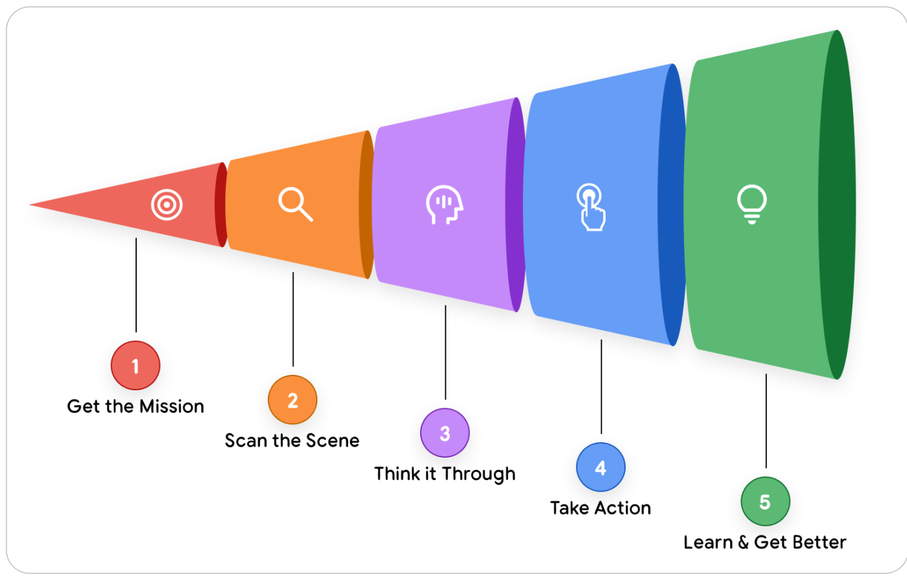
- 1. Get the Mission (获取任务)：接收高层目标输入（来自用户提示词或系统事件）。
- 2. Scan the Scene (扫描感知)：聚合上下文、用户历史偏好、会话状态与工具能力集。
- 3. Think It Through (深度思考)：模型进行任务拆解、路径规划与思维链逻辑推演。
- 4. Take Action (采取行动)：向外部工具发起调用（API、数据库读写、脚本沙箱执行）。
- 5. Learn & Get Better (观察学习与迭代)：获取工具返回结果（Observation），校准短期记忆并驱动下一轮思考，直至达成目标并沉淀经验。
这种“思考-行动-观察（Think, Act, Observe）”的循环不断交替推进——由编排层负责状态流转、大模型负责推理规划、工具负责实际落地，直到智能体内部设定的计划全部完成，最初的使命圆满达成。
真实案例：客户支持智能体实战演示
让我们以真实业务中的客服支持智能体（Customer Support Agent）为例，观察其在上述五步循环中的严谨表现：
假设用户提问：“请问我的订单 #12345 现在到哪了？”
智能体绝不会盲目胡乱猜测或立刻回复，而是首先进入“深度思考（Think It Through）”阶段，制定出一套完整的执行策略：
智能体内部推理单白：
“用户需要了解配送状态。要提供完整准确的答案，我需要分步走：
- 身份确认 (Identify)：我必须先在内部数据库查询订单 #12345，确认订单存在并提取其详细信息。
- 物流追踪 (Track)：从订单明细中提取承运快递公司的物流单号，随后调用外部物流公司的实时 API 获取最新轨迹。
- 综合汇报 (Report)：最后，将获取的信息汇总整理成对用户清晰、友好的答复。”
在心中有了这个多步方案后，智能体开始稳步执行：
- 第一阶段行动 (Act 1)：执行计划第一步，发起工具调用
find_order("12345")。智能体随后观察 (Observe) 到返回结果：包含完整订单记录，提取出运单号"ZYX987"。 - 第二阶段推进：编排层识别出计划的第一阶段已就绪，立刻触发第二步行动。发起工具调用
get_shipping_status("ZYX987")。智能体观察 (Observe) 到最新的物流系统返回状态："Out for Delivery"（派送中）。 - 最终汇报生成 (Report)：至此，所需数据全部闭环收集完毕。智能体感知到所有关键拼图已齐全，组织最终文案并向用户输出答复：“您的订单 #12345 目前处于‘派送中’状态，预计很快将送达您的手中！”
4. 智能体系统分级分类法 (A Taxonomy of Agentic Systems)
理解五步操作循环只是解开了系统的第一块拼图。第二个关键是要认识到：该操作循环在复杂度上可以纵向分层，演进出截然不同能力量级的智能体类别。对于系统架构师和产品负责人而言，起步阶段最核心的决策，正是明确界定自己究竟需要构建哪个层级的智能体。
我们可以将智能体系统自底向上划分为五个核心梯队，每一层都建立在前一层的能力基石之上：
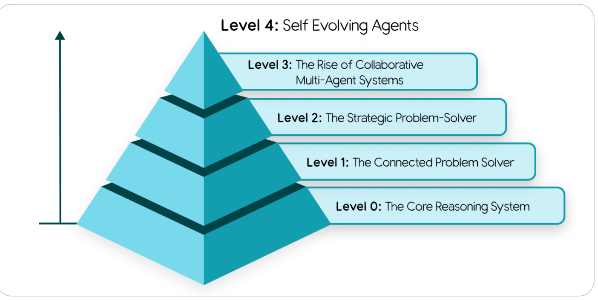
- Level 0: 核心推理系统 (The Core Reasoning System)：纯孤立大模型，仅依靠预训练权重参数知识，无外部连接。
- Level 1: 连接型求解者 (The Connected Problem Solver)：接入外部工具（搜索、计算器、实时 API、RAG 数据库）。
- Level 2: 策略型求解者 (The Strategic Problem Solver)：具备多步骤战略规划能力与动态上下文工程管理。
- Level 3: 协作型多智能体系统 (The Rise of Collaborative Multi-Agent Systems)：由管理协调者与专能特化智能体组成数字化团队分工协作。
- Level 4: 自主演进系统 (Self Evolving Agents)：元推理能力，能发现自身能力短板并自主创建工具或孵化新智能体。
Level 0: 核心推理系统 (The Core Reasoning System)
在构建智能体之前，我们必须从最基础形态的大脑开始：纯粹的推理引擎本身。在此形态下，大语言模型（LM）处于完全孤立的静态状态，仅凭借其庞大的预训练权重参数记忆做出反应，没有任何外部工具、会话持久记忆，也不与外部实时环境发生任何交互。
它的优势在于极其广泛深厚的通用模式知识，能够深入解释已有概念、设计解决问题的宏观思路。但其致命短板在于完全缺乏对现实环境的实时感知——对于预训练截断期之外的任何事件或事实，它在功能上完全是“盲人”。
例如，它可以深入浅出地讲解职业棒球的复杂规则以及纽约洋基队的全部队史；但如果你问它：“洋基队昨晚比赛的最终比分是多少？”，它根本无法作答。因为昨晚的比赛是现实世界最新发生的事件，根本不可能存在于它的预训练数据集中。
Level 1: 连接型问题求解者 (The Connected Problem-Solver)
在此层级，推理引擎通过连接并利用外部工具——我们架构中的“双手”组件——演变为真正具备实用功能的智能体。其问题求解边界不再被死死禁锢在静态预训练数据中。
借助五步循环，智能体现在可以轻松回答前面的难题。面对任务“昨晚洋基队比赛的最终比分是多少？”，其“思考”步骤识别出这是一个实时数据诉求；随后的“行动”步骤调用 Google 搜索 API 工具，传入准确的日期与检索关键词；智能体“观察”到搜索结果显示“洋基队以 5-3 获胜”，并将该最新事实综合为最终答案交付用户。
无论是利用搜索工具查比分、调用金融 API 查询即时股价，还是通过检索增强生成（RAG）连接企业数据库，与外部现实世界交互的基本能力正是 Level 1 智能体的核心标志。
Level 2: 策略型问题求解者 (The Strategic Problem-Solver)
Level 2 标志着系统能力的质的飞跃：从单纯执行单一离散任务，跨越到能够为复杂的、多阶段宏观目标进行战略规划（Strategic Planning）。在这一阶段涌现出的最关键工程技术，正是上下文工程（Context Engineering）：即智能体能够为执行计划中的每一步骤，主动挑选、打包、精炼并管理最相关的有效信息。
智能体的准确率高度依赖于聚焦、高质量的上下文。上下文工程的本质就是精心裁剪大模型的有限注意力（Attention），避免信息超载以确保推理效能达到最佳。
例如，考虑任务：“在山景城我公司（Amphitheatre Parkway 1600号）和我客户旧金山办公室（Market St 1号）的中间折中位置，找一家优质的咖啡馆。”
Level 2 智能体将构建出清晰的战略推演：
- 思考：“我必须首先确定两处地址的几何中间点。”
行动：调用 Maps 地图工具，传入两个地址。
观察：“两者的中点位置是加州米尔布雷市（Millbrae, CA）。” - 思考：“现在我需要在米尔布雷市检索咖啡店。用户特别要求‘优质’，因此我需要过滤评分在 4.0 星以上的优质商家。”
行动：调用google_places工具，入参query="coffee shop in Millbrae, CA", min_rating=4.0。（这就是精妙的上下文工程——它根据上一阶段的产出自动构造出聚焦的新检索指令）。
观察：工具返回了 'Millbrae Coffee' 与 'The Daily Grind' 两家匹配项。 - 思考：“我将整合这两家店的评分、地址与特色，生成结构化推荐报告呈现给用户。”
这种战略规划能力同样解锁了主动式协助（Proactive Assistance）：例如智能体自动解析一封冗长的航班确认邮件，提炼核心上下文（航班号、起飞时间、登机口），并主动将其作为日程事件写入你的个人日历。
Level 3: 协作型多智能体系统 (The Collaborative Multi-Agent System)
在更高的层级上，整个开发范式彻底转换。我们不再尝试去打造一个无所不能、臃肿庞大的“超级单一智能体（Super-Agent）”，而是转向构建一个“专家协作团队（Team of Specialists）”。这一模式直接镜像了人类现实社会中的企业组织架构——系统的集体强大，源自高度明确的社会化专业分工。
在 Level 3 体系中，智能体将其他智能体视为工具。设想一个“项目经理智能体（Project Manager Agent）”接收到业务使命：“负责我们全新‘Solaris’降噪耳机的全球上市发布会。”
项目经理智能体绝不会独自去包揽所有琐碎细节，而是像现实管理者一样，将子任务委派给专属的特化智能体团队：
- 委派给市场调研智能体 (MarketResearchAgent)：“深入分析当前市场竞品降噪耳机的定价策略与受众区间，明天下班前交付摘要报告。”
- 委派给文案营销智能体 (MarketingAgent)：“以‘Solaris’产品规格参数表为核心上下文，撰写三个不同风格维度的公关新闻通稿初稿。”
- 委派给前端开发智能体 (WebDevAgent)：“根据设计团队附带的 Figma 页面原型，直接生成产品官方独立着陆页的生产级 HTML 与样式代码。”
这种协作架构虽然在今天仍受限于大模型的长程推理极限，但它代表了全链路端到端自动化解决企业复杂核心业务的最新工业前沿。
Level 4: 自主演进型系统 (The Self-Evolving System)
Level 4 构成了从“静态分工委派”向“自主创造与动态适应”的终极质跃。在此顶级层级，智能体系统具备元认知（Meta-Reasoning）能力，能够敏锐洞察自身的能力短板与知识死角，并在运行期间动态自主编写出全新工具，甚至实时孵化出全新的子智能体来补齐缺口。它彻底摆脱了受限于预设固定资源的局限，迈入主动扩展自身能力边界的自主演化时代。
延续上面的 Solaris 耳机发布案例，项目经理智能体在推进过程中意识到：“我们需要实时监控社交媒体各大平台对‘Solaris’品牌的情感舆情与讨论热度，但当前团队工具库中根本没有社交舆情监控工具或相关成员。”
- 元认知思考：“我必须监控关于‘Solaris’的社交媒体声量与舆情倾向，但我目前缺乏该能力。”
- 自主创造行动：它并不会宣告任务失败或停滞等待人类介入，而是主动调用顶层的
AgentCreator（智能体创建工具），发布子使命：“构建并部署一个专职的情感分析智能体，设定其抓取包含‘Solaris headphones’关键词的社媒动态，执行情感极性分析，并每日定时汇总报告。” - 观察演进成果：一个全新的、经过自动化沙箱测试验证的
SentimentAnalysisAgent被动态创建并接入协作网络，无缝融入主团队，立即投入整体使命的协同作战。
这种能够自主发现短板、动态构建能力并自我演进的智能体系统，真正将 AI 软件群落塑造成了一个会自主学习、自我进化的生命型组织。
5. 核心架构：模型、工具与编排 (Core Agent Architecture: Model, Tools, and Orchestration)
在理解了智能体能做什么以及其能力层级后，最核心的工程挑战在于：我们如何在代码与架构层面真正实现它？从抽象概念走向稳健代码的关键，就在于其三大核心基石的架构设计。
模型：AI 智能体的“大脑” (Model: The "Brain" of your AI Agent)
语言模型（LM）是智能体的推理中枢。模型的选型是决定智能体认知深度、运行开销与响应延迟的头号架构决策。然而，如果仅仅把选型当成是在学术排行榜（Leaderboard）上挑选基准跑分最高的模型，往往是走向失败的歧途。生产级智能体的成败，极少取决于通用学术榜单的分数差异。
真正的工业级成功，要求模型在智能体底层基本功上表现卓越：具备应对多步骤复杂逻辑的超强推理能力，以及调用外部接口时极致稳健的工具使用准确度（Reliable Tool Use）7。
科学的选型方法应当是：首先清晰定义实际业务指标，然后针对与该业务结果直接绑定的评测集来检验模型表现。如果你的智能体主要任务是辅助写代码，就必须在你们私有的真实代码库上展开评测；如果它用于处理商业保险理赔单据，就应该测试它从你们特定格式的复杂非结构化保单中提取关键字段的鲁棒性。随后，再将质量指标与模型单次推理成本及端到端延迟进行交叉权衡。最优质的模型，永远是坐在质量、响应速度与调用成本黄金平衡点上的那一款8。
在现代架构中，你很可能会采用混合模型路由（Model Routing）打造一个“特化专家团队”。杀鸡无需用牛刀——健壮的架构通常会使用类似 Gemini 2.5 Pro 这样的前沿旗舰大模型负责复杂的初始任务规划、反思与深度推理，而将海量、高频、模式固定的简单任务（如用户意图快速分类、长文本摘要或参数格式化）智能路由给轻量快速、成本极低的 Gemini 2.5 Flash。模型路由策略既可以通过规则显式硬编码，也可以由专用小模型动态分配，这是达成最佳性价比的核心法则9。
在处理多模态数据时亦是如此。除了像 Gemini live mode10 这种天然支持音视频与图像的原生多模态模型外，另一种方案是组合使用 Google Cloud Vision API11 或 Speech-to-Text API12 等专用服务——先将视听物理世界转换为文本，再交付语言模型推理。这提供了高度灵活性，但也增加了编排复杂度。
最后必须铭记的是：AI 领域正处于光速演进之中。你今天精心挑选的模型，六个月后大概率就会被新一代模型超越。“一劳永逸”的静态思维在 AI 时代是无法维系的。拥抱这一现实意味着必须投资建设敏捷的 Agent Ops（智能体运维实践）13。借助覆盖核心业务指标的稳健 CI/CD 流水线，你能够对新模型进行持续自动化评测，以最低的风险快速完成模型热更新替换，确保智能体始终搭载业内顶尖的“大脑”，而无需频繁伤筋动骨重构底层代码。
工具：AI 智能体的“双手” (Tools: The "Hands" of your AI Agent)
如果说模型是思考的大脑，那么工具就是将思考与客观现实世界紧密相连的双手。工具让智能体能够冲破静态训练权重的牢笼，实时获取外部世界的真实现状并实施物理干预。一个稳健的工具接口遵循经典的闭环三部曲：声明工具能做什么（Defintion）、触发工具调用（Invocation）、接收并解析执行反馈（Observation）。
1. 信息检索：锚定现实事实 (Retrieving Information: Grounding in Reality)
最基础但最重要的工具能力就是获取新鲜事实。检索增强生成 (RAG) 为智能体配备了一张“数字图书馆借阅卡”，使其能够穿透存储在向量数据库（Vector Databases）或知识图谱（Knowledge Graphs）中的海量数据——无论是企业内部深度的 Confluence 知识库、财报单据，还是通过 Google 搜索连通全网公开情报。对于高度结构化的业务数据，自然语言转 SQL (NL2SQL) 工具能够让智能体直接查询分析型数据仓库（如 BigQuery），回答诸如“上季度我们各区域销量前五的明星产品分别是什么？”等深度商业智能分析。在说话前先检索求证，是智能体杜绝模型幻觉、立足客观事实的终极法宝。
2. 执行行动：改变现实世界 (Executing Actions: Changing the World)
当智能体从被动阅读信息跨越到主动执行操作时，其真正的威力才会彻底爆发。通过将现存的企业微服务 API 和自定义代码封装为标准化工具，智能体能够自动起草并发送工作邮件、自动安排 Google Meet 会议，或者直接在 ServiceNow / Jira 中更新关键工单状态。对于更加动态、多变的计算与数据清洗任务，智能体能够实时编写并执行代码。在高度隔离受控的安全沙箱环境中，智能体可以临场编写一段复杂的 Python 脚本或 SQL 过程来处理特定数学计算或报表汇总，瞬间从一个高谈阔论的顾问转变为一个执行力爆棚的自主行动者 (Autonomous Actor)14。
3. 人在回路 (Human in the Loop - HITL)
这包括用于人机深度交互的工具集。智能体可以通过调用 ask_for_confirmation() 在遇到高危操作（如转账付款、删除生产数据库）时主动暂停工作流，呼叫人类审批；或者调用 ask_for_date_input() 在前端向用户弹窗请求特定关键参数。这确保在涉及重大商业风险的关键节点上，人类始终保有最终的掌控权与审计权。
函数调用：将工具与智能体相连 (Function Calling: Connecting Tools to your Agent)
为了让模型稳定无误地触发“函数调用（Function Calling）”并准确传参，系统需要清晰明确的描述指令、安全鉴权的通信管道以及规范的编排契约15。成熟的工业标准如 OpenAPI 规范 提供了坚固的契约基础，向智能体清晰描述每个工具的设计用途、必填与选填参数的数据类型以及预期的返回结构。这保证了模型每次都能生成合规的 JSON 载荷并准确解析服务端响应。
为了进一步简化跨工具的发现与生态互联，开放标准如 模型上下文协议 (Model Context Protocol, MCP)16 迅速风靡业界。此外，前沿大模型原生内置了核心工具（例如 Gemini 原生内置了 Google 搜索能力），使得工具调用能够在模型推理内部极速闭环，大幅降低延迟并提升可靠性17。
6. 编排层：智能体的中枢神经 (The Orchestration Layer)
如果把模型比作大脑、工具比作双手，那么编排层就是串联起两者的中枢神经系统。它是驱动“思考-行动-观察”主循环运转的动力引擎，是掌控智能体生命周期行为的状态机，更是开发者将其业务思考与控制逻辑赋予生命的地方。编排层绝非简单的管道胶水代码，它是整场智能体宏大交响乐的总指挥——由它来决定模型何时应当深思熟虑、哪个工具应当粉墨登场，以及外部世界的反馈如何指引乐曲的下一个乐章。
核心设计选择 (Core Design Choices)
首要的架构抉择是确定智能体的自主权让渡边界（Degree of Autonomy）。这是一个连续的光谱：一端是高度确定性、路径锁死的工作流，仅在某一特定环节把大模型当做提取字段或润色的简单工具（在传统代码中洒上一点点 AI 调味品）；另一端则是大模型完全坐上驾驶座，自主规划目标分解、动态应对异常并执行全部链路。
与之并行的考量是工程实现方式。低代码/无代码平台（No-code Builders）提供了极快的上手速度与敏捷性，赋能非技术人员迅速搭建自动化轻应用；而对于涉及企业核心命脉、面对高并发与严苛安全审计的关键业务，以代码为中心的工程框架（如 Google 的 Agent Development Kit, ADK18）提供了不可或缺的深度控制力、定制自由度与无缝的系统整合能力。
无论采用何种技术路线，构建生产级智能体必须坚守三大原则：开放性（Openness），避免与特定单一模型厂商强绑定；精准受控（Precise Control），采用混合架构将大模型的概率性推理牢牢约束在确定性的业务规则护栏之内；以及至关重要的全链路可观测性（Observability）。当智能体出现反常行为时，你无法像调试传统程序那样在模型的某个“神经元念头”上打断点。一套卓越的编排框架必须输出详尽高保真的跟踪日志（Traces），完整还原智能体的思维决策轨迹：包括模型在内部说了什么（思考独白）、为何选择这个工具、构造了什么参数，以及工具究竟返回了什么。
注入领域专业知识与人设 (Instruct with Domain Knowledge and Persona)
在编排体系中，开发者最核心的操控杠杆就是赋予智能体充沛的专业领域知识与鲜明的人设准则。这是通过系统提示词（System Prompt）或基础指令集实现的。这绝不是一句随意的对话指令，而是整个智能体必须严格遵循的最高宪法。
在宪法中，你明确告知它：“你是由 Acme 公司认证的资深技术专家客服……”，并为其设定清晰的合规边界、预期的结构化输出 Schema、严苛的交互准则、特定的语气语调，以及在何种特定前提下才能触发何种工具调用的明确约束。在指令中嵌入少量的真实边界案例演示（Few-shot scenarios），通常能取得立竿见影的稳定性提升。
借助上下文与记忆进行能力增强 (Augment with Context)
智能体的所谓“记忆”，本质上是在运行时由编排层动态组织并注入到大模型的上下文窗口之中的。19
- 短期记忆 (Short-term memory)：是智能体在当前交互中的“实时工作草稿纸（Scratchpad）”，它维护着当前会话的即时上下文与事件流水，忠实记录着本轮循环中所有的（Action 行动，Observation 观察）键值对，为大模型推导下一步动作提供不可或缺的即时上下文。在工程上通常抽象为 Session、Thread、Artifact 或 State 状态机。
- 长期记忆 (Long-term memory)：提供跨越多个独立会话周期的持久化认知能力。在底层架构上，这几乎无一例外被实现为专属的 RAG 检索体系——连接到底层的持久化向量数据库或企业知识图谱。编排层赋予智能体主动预拉取与主动查询自身历史的能力，使其能够“回忆”起特定用户的历史偏好习惯，或是调取数周前类似复杂工程问题的最佳实践，从而带来真正个性化、前后连贯的深度协作体验。
多智能体系统与设计模式 (Multi-Agent Systems and Design Patterns)
随着业务任务规模指数级膨胀，试图依靠单体“全能超级智能体”会迅速遭遇上下文瓶颈与推理退化。最具工程实效的方案是转向“专家团队模式”，将宏大流程拆解为离散的子任务，每个子任务分配给专注单一职责的特化 AI 智能体。这种职责隔离让每个智能体保持极度轻巧、敏捷，极大降低了单元测试与维护排错的难度。20
现代架构演化出了一批被工业界反复验证的经典多智能体设计模式：
- 协调者模式 (Coordinator Pattern)：引入一个“项目经理智能体”，全面剖析复杂意图并拆解主任务，将不同子环节智能路由给对应的特化专家（如研究员、撰稿员、测试员），最后汇总各方产出完成终审交付。
- 顺序流水线模式 (Sequential Pattern)：适用于线性的流水线工作，如数字化装配车间，上游智能体的产出作为下游智能体的输入连续流转。
- 迭代精炼模式 (Iterative Refinement Pattern)：构建严密的自我博弈质量闭环：由“生成智能体（Generator）”负责起草内容，而由独立的“质检裁判智能体（Critic）”依据严苛指标进行审查打分；若不合格则携带修改意见反馈回生成者重新迭代，直到达到质量基线（见图 3）。
- 人在回路模式 (Human-in-the-Loop, HITL)：在涉及高危操作、重大决策或模糊歧义时设置主动断点，必须由人类专家完成确认后方可继续执行。
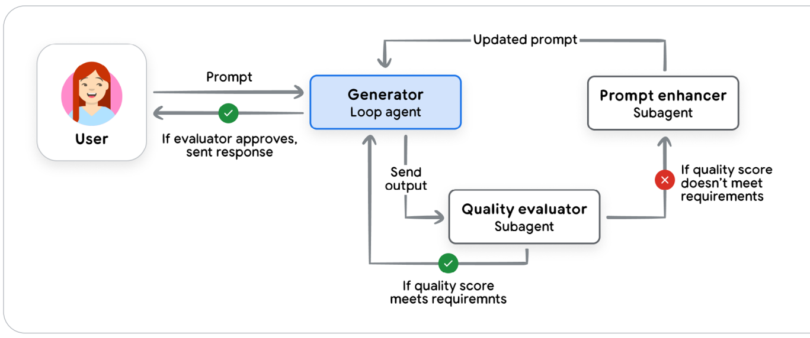
来源：cloud.google.com/architecture/choose-design-pattern-agentic-ai-system
- User Prompt (用户原始提示词)：用户提出业务诉求。
- Generator Loop Agent (生成循环智能体)：初次生成解决方案草稿。
- Quality Evaluator Subagent (质量评估子智能体)：充当严苛质检员，依据规则独立打分。
- Prompt Enhancer Subagent (提示词优化子智能体)：若评分不达标（❌），自动归纳缺陷原因并重构升级提示词，触发生成器重新迭代。
- Output (最终达标交付)：当质检完全通过（✔）时，正式向用户发送高质量结果。
7. 智能体部署与运行时服务 (Agent Deployment and Services)
当本地的原型开发完成之后，下一步必然是将其部署到高可用的服务器环境，以供全天候连续运行并接受人类及其他系统的并发调用。如果延续我们前面的身体隐喻，部署与基础运行时服务就是智能体的“身躯与双腿”。一个真正能够上线服务的智能体，依赖一系列深层基础服务的支撑：会话持久化存储、全局状态治理、合规安全隔离等等。作为智能体架构师，你必须对日志审计策略、数据主权、隐私驻留法规遵从做出全面架构设计。
幸运的是，今天的智能体开发者完全可以站在现代云计算成熟的托管基建肩膀之上。企业可以选择专为智能体量身打造的全托管平台，如 Vertex AI Agent Engine，该平台将弹性运行时、会话记忆管理、安全沙箱和企业鉴权一站式整合完毕21（如图 4 所示）。而对于希望对技术栈保持完全自主控制权、或者将智能体直接编织进现有 DevOps 工具链的工程团队，任何智能体都可以被无缝打包进标准 Docker 容器镜像中，部署在业界标准的弹性云原生运行时（如 Cloud Run 或 Google Kubernetes Engine, GKE）上高效运转22。
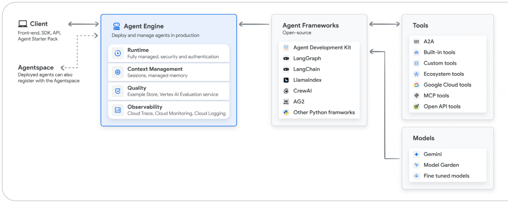
来源：cloud.google.com/vertex-ai/generative-ai/docs/agent-engine/overview
- Client 层 (客户端访问)：前端 SDK、OpenAPI、Agentspace 注册服务。
- Agent Engine (全托管生产引擎)：
- Runtime (运行时)：全托管容器环境、弹性扩缩容、安全鉴权隔离。
- Context Management (上下文管理)：会话持久化存储 (Sessions)、长期受控记忆 (Managed Memory)。
- Quality (质量保障)：黄金测试集评测、Vertex AI 自动化评估服务。
- Observability (可观测性)：Cloud Trace 链路追踪、Cloud Monitoring、Cloud Logging。
- Agent Frameworks (开发框架层)：ADK (Agent Development Kit)、LangGraph、LlamaIndex、CrewAI 等。
- Tools & Protocols (工具生态)：A2A 智能体协议、内置工具、企业生态工具、MCP 协议、OpenAPI 外部服务。
- Models (基础模型池)：Gemini 2.5 系列、Model Garden 开源精选模型、企业私有微调大模型。
对于非资深 DevOps 专家而言，初次部署智能体往往会感到门槛偏高。现代框架通过引入一行部署命令或专用仪表盘大幅简化了起步流程，这对于前期的原型摸索与概念验证非常有益。然而，要真正建立起合规、安全、坚不可摧的生产级基础设施，必然需要长期深度的工程投入，包括建立端到端的自动化 CI/CD 流水线与智能体全自动回归测试套件23。
8. Agent Ops：应对非确定性的系统化运维 (Agent Ops: A Structured Approach to the Unpredictable)
在开发最初的原型时，你通常依靠人工在对话框里一次又一次地手动测试：“加了这个新功能，它表现正常吗？”“修了上次的 Bug，会不会引发出新的怪异行为？”手动测试是传统软件工程的老习惯，但在面对生成式非确定性 AI 时，这一套完全失灵了。
从传统的确定性软件走向随机概率性（Stochastic）的智能体系统，需要一套颠覆性的运营管理哲学。在传统单测里，我们只需断言 assert output == expected；但这在智能体领域根本行不通，因为智能体的输出在设计上天然就是概率多样的。此外，由于人类自然语言的复杂多义，要衡量一段回复是好是坏，往往需要另一个高级大模型来进行全方位的“质检评审”——确保智能体的回复涵盖了所有该说的内容、没有吐露任何不该说的秘密，且语气语调完全得体合规。
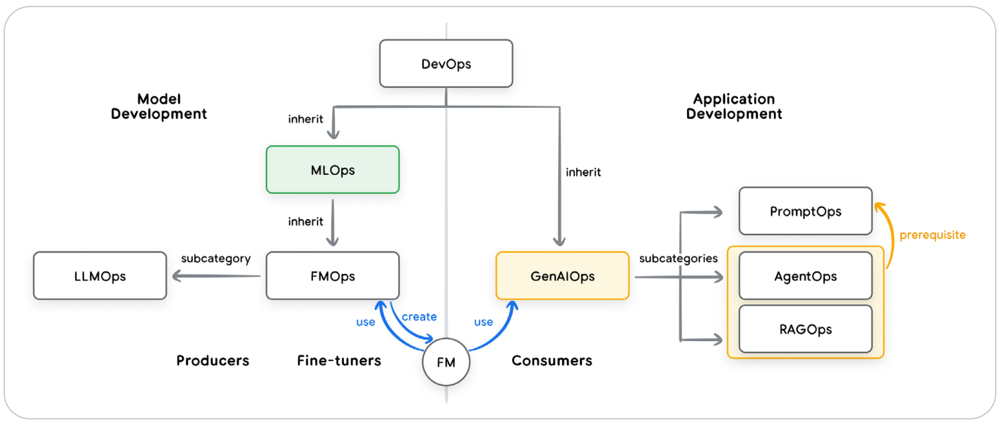
来源：Sokratis Kartakis: GenAI in Production: MLOps or GenAIOps?
- DevOps (开发运维)：传统软件工程基石（代码管理、CI/CD、基础设施编排）。
- MLOps (机器学习运维)：继承 DevOps，管理模型训练、特征工程、超参优化与权重部署。
- GenAIOps (生成式 AI 运维)：继承 MLOps，包含两大赛道：
- 模型生产者 (Producers & Fine-tuners)：LLMOps、FMOps（基座大模型预训练与微调）。
- 模型消费者 (Consumers - 应用开发端)：PromptOps、RAGOps，以及最为顶层的 AgentOps。
- AgentOps：面向智能体系统的终极工程学科，全面覆盖自主规划、多步工具轨迹审查、状态长程演变与非确定性系统治理。
Agent Ops 是应对这一全新工业现实的纪律严明、结构化的运维工程体系。它是 DevOps 与 MLOps 的集大成者，专为解决智能体构建、部署、监控与治理中的独特痛点而生，将大模型的非确定性从不可控的潜在系统负债，转化为可度量、可治理、高度可靠的商业生产力24。
衡量关键指标：像 A/B 测试一样设定成功指标 (Measure What Matters)
在优化智能体之前，你必须从企业商业视角明确界定什么叫“变得更好”。将你的可观测性策略设计成严格的 A/B 对照实验，持续拷问：究竟哪些关键绩效指标（KPI）能确凿证明该智能体创造了可量化的业务价值？
这些指标必须超越单纯的技术准确性，直接衡量现实商业影响力：业务终局达成率（Goal Completion Rate）、用户真实满意度打分、单任务端到端延迟、单次交互的计算与 Token 运营成本；最关键的是直接挂钩业务目标——如客户转化率提升、商业营收增长或客户流失率下降。这套自上而下的指标视野将牵引后续的所有测试，指引你迈向指标驱动开发（Metrics-Driven Development）之路，并让你能够精准计算投资回报率（ROI）。
用质检替代简单的通过/失败：引入大模型裁判 (Quality Instead of Pass/Fail: Using a LM Judge)
宏观商业指标无法告诉你智能体在某一次具体交互中的逻辑步骤是否绝对正确。由于无法进行二元生硬的 pass/fail 判断，业界主流转向了“大模型即裁判 (LM as Judge)”的高级评估体系。这通过调用一个推理能力更强、更客观的大模型，对照事先设计好的多维度评分细则（Rubric）对被测智能体的输出进行全方位审判：它是否给出了正确的答案？回复是否牢牢锚定在检索事实中（无幻觉）？是否严格执行了全部系统指引？
将这套自动化评估流水线运行在一个包含海量经典难题与标准答案的黄金测试集（Golden Dataset）上，就能为每次系统升级提供科学、一致的质量刻度线。构建这些黄金数据集往往需要从真实生产日志中抽样大量代表性案例与极端异常边界案例（Corner Cases）。虽然前期构建评测集需要工程投入，但其回报极高。在评估被正式采纳之前，应由资深业务领域专家进行人工复核标定。如今，构建并维护这套黄金评测集，正逐渐成为现代 AI 产品经理在业务专家支持下的最核心职责。
指标驱动开发：部署的准入准出标准 (Metrics-Driven Development)
一旦你实现了数十个典型评估场景的自动化验证，并建立了值得信赖的综合质量基准分，你就可以充满信心地对开发环境中的智能体进行任意迭代升级。流程非常清晰：每次提交新版本代码或修改提示词后，让新版智能体在整套黄金评测集上跑一遍，直接将其得分与现存线上生产版本的得分进行全方位量化比对。
这套严谨的工程机制彻底终结了靠“凭感觉调试”的蛮荒时代。除了质量评分，评估流水线同时监控执行延迟、Token 消耗量以及任务达成率。在投产部署时，建议采用灰度金丝雀发布或 A/B 流量逐步切流，将线下的模拟跑分与线上的真实生产指标并网监控，确保万无一失。
借助 OpenTelemetry 追踪进行调试：回答“为什么” (Debug with OpenTelemetry Traces: Answering "Why?")
当监控大盘显示某项核心指标发生滑坡，或者线上用户提交了一条缺陷工单时，工程师必须迅速查明背后的“根因”。OpenTelemetry Trace（分布式追踪）记录了智能体在单次任务执行过程中的完整步骤轨迹（Trajectory），是排查智能体行为偏差的终极武器25。
通过追踪流水，你可以清晰还原出：那一秒发给大模型的完整 Prompt 到底是什么、模型内部的思考推演逻辑（如可见）、它做出了调用哪个工具的决定、构造了哪些具体入参，以及工具底层返回的原始 Observation 数据。借助 Google Cloud Trace 等分布式链路分析平台，团队可以对数以百万计的智能体执行轨迹进行聚合分析、可视化检索，迅速定位偶发异常的深层根源。
珍视人类反馈：指引自动化演进 (Cherish Human Feedback)
人类用户的负向反馈不是惹人烦扰的琐碎报障，而是用于持续改良智能体最宝贵、信息浓度最高的数据宝矿。当用户提交工单或点下“踩（Thumbs Down）”按钮时，他们实际上赠送了你一个极佳的礼物：一个你们现存自动化评测集此前完全漏掉的真实业务边界案例。
严谨的 Agent Ops 机制必须建立“闭环反馈流水线（Close the Loop）”：捕获这些真实的负向反馈，在开发环境中 100% 还原复现该异常，并把该特定场景正式编码为黄金测试集中的一个新增永久测试用例。这确保工程团队不仅修复了眼前的 Bug，更在系统层面完成了“疫苗接种”，确保同类缺陷在未来所有迭代版本中永不复发。
9. 智能体互操作性 (Agent Interoperability)
当你打造出高品质的智能体之后，下一步就是将其与广袤的外部世界相互连通——既要连通人类用户，也要连通其他智能体。如果延续身体解剖的隐喻，这构成了智能体的“面容与沟通表达之窗”。必须明确的是：连接外部数据/API 与连接其他智能体，在本质上有着天壤之别；“智能体不是普通的工具”26。
智能体与人类 (Agents and Humans)
人机交互最常见的形态依然是通过前端 UI 界面。在最简单形态下它表现为一个聊天机器人；而在高级形态下，智能体向前端输出高度结构化的 JSON 状态流，动态驱动精美多变的富交互界面。常见的人机协同（HITL）交互模式包括：意图澄清修正、目标扩充确认、高危动作授权等。
计算机使用 (Computer Use) 是一类极具颠覆性的工具技术：大模型能够像人类操作员一样接管图形界面操作，在人类的监督下点击按钮、滚动页面、跨系统自动填写表单27。更为前沿的是，大模型不仅可以代替人类操作现有 UI，还能根据当下会话的独特语境动态生成最匹配的专属界面——例如通过工具动态控制组件（MCP UI）28、基于事件分发与状态同步的双向通信协议（AG UI）29，甚至是实时生成定制化界面的 A2UI 协议30。
人机协作绝不仅限于冰冷的键盘与屏幕。先进智能体正在冲破纯文本的桎梏，迈入实时原生多模态“Live 模式”。借助类似 Gemini Live API31 提供的全双工双向流式通信，人类用户可以直接与智能体语音对话，并且能够随时打断其发言，完全契合人类日常最自然的交流节奏。智能体能够实时“看”到设备摄像头捕捉的画面，实时“听”到人类的原声口令，以几乎与人类交谈无异的毫秒级极低延迟做出语音互动反馈，在工业设备免提维修指导、实时医疗辅助等场景下爆发惊人价值。
智能体与智能体 (Agents and Agents)
当企业内部各个部门（HR、法务、财务、业务与技术部门）各自构建起专业特化的大批智能体时，如果缺乏统一的互联通信标准，整个企业将迅速沦为一个由脆弱、硬编码且极难维护的私有 API 织成的混乱迷宫。多智能体互联面临两大核心挑战：发现机制 (Discovery)（我的智能体如何自动检索到其他团队的智能体，并搞清楚它能做什么？）与通信机制 (Communication)（它们如何使用同一门标准化‘普通话’顺畅交流？）。
Agent2Agent (A2A) 协议 正是旨在攻克这一难题的开放行业标准。它充当着智能体经济时代的“数字通用名片与握手准则”。在 A2A 协议中，每个合规的智能体都会对外公开发布一份 JSON 格式的 “智能体名片 (Agent Card)”，明晰公开其能力特长、网络接入端点（Endpoint）以及安全交互所需的鉴权凭证规范。与侧重于单次同步数据调用的 MCP 协议不同，A2A 协议主要聚焦于跨主体的长程、异步、复杂任务协同问题求解。
在建立连接后，智能体之间基于“面向任务（Task-Oriented）”的异步架构通信。客户端智能体向服务端智能体派发一个异步业务 Task，后者在持久连接上持续向发起者推送流式进度增量与中间状态。这种标准化的通信协议是解锁 Level 3 级企业大规模协同智能体生态的终极拼图。
智能体与资金交易 (Agents and Money)
随着智能体为人类分担越来越繁重的工作，其职责不可避免地触及了商业采购、商务谈判与资金交易的深水区。现今的万维网完全是为人眼审阅并由人类亲手点击“立即购买”按钮而设计的，所有商业与法律责任均由点击的人类承担。然而，一旦拥有自主行动权的智能体在没有人类直接确认下代表人类“下单扣款”，一场严重的信任与法理危机立刻降临：如果交易出错、金额错误甚至买错了商品，责任究竟归属于谁？
为了解锁真正自治的智能体经济（Agentic Economy），业界正在制定全新的可信商业标准：
- 智能体支付协议 (Agent Payments Protocol, AP2)：作为智能体商业领域的奠基性开放协议，它扩展了 A2A 规范，引入了具有密码学数字签名的“数字授权书 (Digital Mandates)”。数字授权书构成了不可篡改、具有法律可追溯性的人类意图证明，为每一笔交易建立起坚固的防抵赖审计线，允许智能体在人类委托的金额与权限边界内，安全在全球网络中展开议价与采购交易。
- x402 协议：基于 HTTP 状态码
402 Payment Required唤醒的去中心化即时微支付标准。它支持机器对机器（M2M）极低损耗的毫秒级微支付，允许智能体在按次调用付费 API 或购买高质量付费数据时，实现即用即付，彻底摆脱复杂的企业信用卡月度签约与臃肿的企业审批流程。
10. 保障单个智能体的安全：信任与效用的权衡 (Securing a Single Agent: The Trust Trade-Off)
当你着手打造自己的第一个 AI 智能体时，你将立刻迎来一场最根本的工程拉锯战：实用效用与安全边界之间的深刻权衡。要想让一个智能体真正有用，你必须赋予它实权——赋予它自主决策的自由裁量权，以及让它向外部发送邮件、执行转账、更新核心生产数据库的工具执行权。然而，你赋予它的每一盎司权力，都在数学上等比例引入了对应的潜在安全风险。核心的安全梦魇是失控越轨行为（Rogue Actions）以及敏感企业核心机密外泄。开发者必须为其套上合适的“安全缰绳”——既要足够长，让它能自如干活；又要足够紧，绝不能让它在涉及敏感资产时脱缰失控32。
为了达成此目标，你绝不能仅仅依赖大语言模型自身的“道德自觉与主观判断”，因为大模型本身极易受到提示词注入攻击（Prompt Injection）的蓄意操纵33。业界推行的最佳实践，是建立坚不可摧的混合式深度防御体系（Defense-in-Depth）34：
- 第一道防线：传统确定性硬规则护栏 (Deterministic Guardrails)：在模型的主观推理逻辑之外，架设绝对硬编码的安检关卡。例如，通过策略引擎直接写死：任何超过 100 美元的对外资金划转，或者触碰删除级 API 时，必须触发物理阻断并强制唤醒人类管理员的双因子确认。这道防线为智能体的行动提供了不可逾越的审计底线。
- 第二道防线：基于推理的智能防御 (Reasoning-based Defenses)：即“用 AI 监管 AI”。一方面在训练端提升模型抵抗越狱注入攻击的稳健性（对抗训练）；另一方面，在架构中挂载专门微调过的轻量级“安全哨兵模型 (Guard Models)”。哨兵模型在主智能体的计划执行前进行独立审查，对存在越轨倾向、触犯合规策略的可疑操作进行标记并阻断。将代码的确定性与大模型的语境感知力完美结合，为单个智能体构筑坚不可摧的立体防护屏障。
智能体身份：一类全新的安全主体 (Agent Identity: A New Class of Principal)
在传统的企业 IAM 安全架构中，世界上只有两类主体：一类是人类员工（采用 OAuth、SSO 登录鉴权），另一类是系统后端服务（采用服务账号 Service Account 或 IAM 角色鉴权）。
智能体的诞生，正式向安全界引入了第三类全新的安全主体。智能体绝不是一段死气沉沉的脚本；它是一个具备自主意图推演能力的行动主体。就像企业必须为每名入职员工配发胸卡工牌一样，平台上的每一个智能体都必须被赋予一张具备密码学公钥证明的数字护照（Digital Passport）。智能体的身份，必须与启动它的人类用户以及编写它的工程师彻底区分开来！这是现代企业统一身份访问管理（IAM）领域面临的深刻架构重构。
| 主体类别 (Principal Entity) | 身份验证与鉴权机制 (AuthN / Verification) | 安全权责特征与说明 (Notes) |
|---|---|---|
| 人类用户 (Users) | 基于 OAuth 2.0、SAML 或企业统一 SSO 登录认证 | 拥有完全自主权的人类行为主体，对其一切操作承担最终法律责任。 |
| AI 智能体 (Agents) (全新安全主体赛道) |
基于 SPIFFE / X.509 数字证书 进行密码学微服务身份校验 | 受委托的代理权（Delegated Authority）：代表人类行事，但其权限范围被严格限制在最小委托授权边界内。 |
| 服务账号 (Service Accounts) | 集成至企业云端 IAM 策略系统 | 运行容器、虚拟机与批处理任务的机器凭据，行为高度确定性，不对业务意图负责。 |
一旦智能体拥有了可密码学验证的独立身份（通常基于 SPIFFE 体系35），企业就能实施严苛的最小特权原则（Principle of Least Privilege）。例如，SalesAgent（销售智能体）被正式授予对 CRM 系统的客户数据读写权限；而 HRonboardingAgent（人事入职智能体）则在网关层被硬性隔离、完全无权读取销售管线。细粒度的身份隔离至关重要，它保证了哪怕某一个智能体发生提示词注入或失控，其潜在的爆炸半径（Blast Radius）也能被严格封死在隔离仓内，绝不蔓延至企业核心资产。
访问控制策略 (Policies to Constrain Access)
安全策略是授权（AuthZ）的载体，它与身份认证（AuthN）完全解耦。策略规定了主体可以做什么：“市场部智能体仅允许访问这 27 个指定的 API 端点，严禁调用任何具有 DELETE 权限的危险操作。”在设计智能体集群时，权限策略必须立体下沉到智能体自身、其可用工具、被调用的远程智能体以及上下文共享缓存等所有层面。黄金准则是：把所有功能注入系统后，立刻收紧策略，仅保留其胜任当下任务所不可或缺的最小权限交集36。
保障 Google ADK 智能体的安全 (Securing an ADK Agent)
在 Google Agent Development Kit (ADK) 框架中，这套安全理念被具象化为极其严密的工程模式：
- Callbacks 回调机制：例如
before_tool_callback，允许在任何工具真正发起网络调用前的最后毫秒内，对模型生成的实参进行深入拦截审查，结合当前会话的物理状态校验其合法性，直接斩断不合规操作。 - Gemini as a Judge 插件模式：挂载响应极快、成本极低的 Gemini Flash-Lite 模型作为安全侧卫，在毫秒级时间内实时扫描用户的输入是否暗藏注入攻击、智能体的回复是否无意间夹带了企业敏感信息（PII）或机密代码39。
- 企业全托管 Model Armor：对于追求企业级无忧安全运维的组织，Google 提供了全托管的 Model Armor（模型装甲）服务，集中化防御越狱注入、敏感隐私（PII）泄露以及恶意钓鱼 URL 攻击，为智能体筑起一道坚不可摧的护城河40。
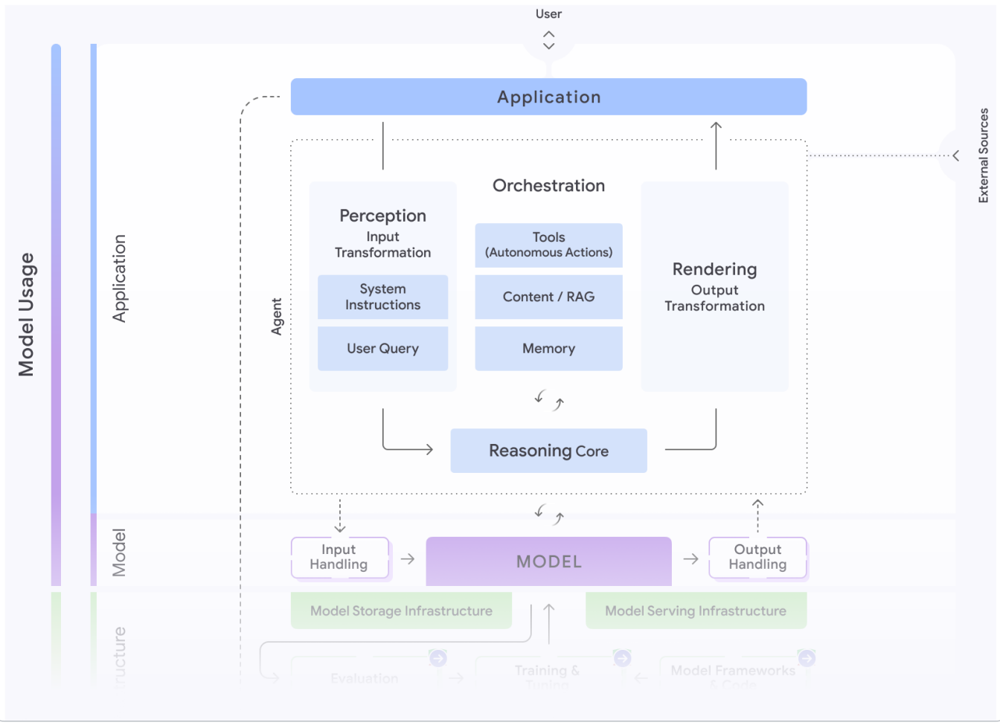
来源：Google SAIF: saif.google/focus-on-agents
- User & Application 交互层：输入过滤、双因子身份鉴权、人机回环审批。
- Perception & Input Transformation (感知与输入转换)：系统指令硬隔离、用户 Query 清洗净化。
- Orchestration (编排安全沙箱)：状态机控制、受限长期记忆、上下文防投毒保护。
- Tools (自主行动保护)：确定性策略守门员、最小特权 API 网关隔离。
- Model & Infrastructure (模型与算力基座)：受保护的私有模型权重、VPC 隔离通信、防侧信道攻击机制。
11. 从单个智能体扩展到企业级智能体集群 (Scaling Up from a Single Agent to an Enterprise Fleet)
单个智能体的投产成功固然令人振奋，但当企业内的智能体规模扩展到成百上千个时，挑战将直接上升为大规模系统架构与治理问题。如果你只管一两个智能体，核心精力在安全隔离；但当数十个团队纷纷上线智能体时，企业将面临当年 API 泛滥一样的困局——“智能体无序蔓延（Agent Sprawl）”。数据流向失控、多主体间死锁、权限越权等风险呈指数级放大。唯有引入更高维度的治理控制平面（Control Plane），方能化解混乱。
安全与隐私：筑牢智能体前沿防线 (Security and Privacy)
智能体本身成为了一种全新的潜在受攻击面。不法分子可能发动恶意的提示词注入篡改系统指令，或者通过数据投毒（Data Poisoning）污染向量数据库中的检索知识。此外，配置松散的智能体极易在生成回复时将内部客户隐私或专有源码泄露给外部用户。
生产级平台必须构筑深度防线：从数据根源做起，确保企业私有资产绝不会被挪用于基础大模型的预训练，并依托 VPC Service Controls 构建端到端的网络隔离围栏；部署专用的出入口双向防火墙对 Prompt 与生成的回复进行实时风控拦截；并依托 Google Cloud 提供的知识产权免责承诺（IP Indemnity），为企业规避法律与知识产权风险。
智能体治理：以控制平面化解无序蔓延 (Agent Governance: A Control Plane instead of Sprawl)
设想一座拥有数万辆无人驾驶汽车飞驰的庞大现代化都市——人类、智能体与工具在其中各行其道。如果缺失了红绿灯、汽车牌照与交警指挥中心，整个城市将立刻陷入彻底瘫痪。中央网关控制平面正是这座数字都市的交警总控指挥塔。所有智能体流量——包括人机交互、MCP 工具调用、A2A 跨主体协同以及对大模型的推理调用——必须统一经由中央网关介入。企业由此获得了全局唯一的战略交叉路口，能够随时审查、调度、监控并管控每一笔交互。
控制平面承载两大核心职责：
- 运行时策略强制执行 (Runtime Policy Enforcement)：作为全局安全架构的唯一咽喉卡点，统揽身份验证与细粒度授权。将分散凌乱的多智能体工作流归一化，形成统一监控大盘（Single Pane of Glass），汇总全局日志、度量指标与分布式调用链。
- 集中式资产治理中心 (Centralized Governance Registry)：类似于“企业级智能体与工具应用商店”。开发者可以在此发现并复用已有的合规智能体与成熟工具，杜绝各部门重复造轮子；管理员则对全量数字员工资产了如指掌，能够在资产发布前执行严苛的安全合规审查、精细的版本生命周期管理，并配置跨部门访问控制权限。
成本与高可用基础设施 (Cost and Reliability: The Infrastructure Foundation)
企业级应用必须在可靠性与成本之间达成完美平衡。频繁报错崩溃或响应极度缓慢的智能体毫无投资回报率可言；而成本高昂到不可承受的系统注定无法规模化推广。企业底层基础设施必须能弹性调优这一天平：
- 缩容至零 (Scale-to-Zero)：针对调用频率不规则、仅在特定事件触发的边缘智能体，支持无请求时缩容至 0 算力，彻底消除闲置资源浪费。
- 预置吞吐保障 (Provisioned Throughput)：对于支撑核心业务、对延迟极其敏感的关键生产任务，平台提供有吞吐量保证的保底通道41，并依托 Cloud Run 99.9% 的企业级 SLA 保障42，确保即便在流量波峰下，核心智能体依然能够稳定、极速响应。
12. 智能体如何演进与自主学习 (How agents evolve and learn)
部署在真实物理世界中的智能体，时刻面对着风云变幻的动态环境：业务政策频繁调整、底层接口更新换代、数据结构不断重构。如果缺乏敏捷的适应力，智能体的业务表现将随着时间推移急剧下滑——这一现象被称为“智能体老化 (Aging)”，并最终导致用户信任的流失。依靠人类工程师手工逐个去修改成百上千个智能体的代码，既昂贵又迟缓。最优雅的解法是赋予智能体自主学习与自我演进能力，以最低的人力成本在日常实战中自主提高业务水平43。
类似于人类的认知成长，智能体从两大核心信息源中吸取养分：运行时的实战经验（Runtime Experience）（会话日志、工具交互记录，尤其是人类专家的实时纠偏指导）与外部最新信号（External Signals）（新下发的法务合规文件、行业监管白皮书）。先进系统将这些宝贵反馈转化为通用复用的资产，主要体现在两大方向：
- 增强型上下文工程：系统根据实战教训持续自动重构自身的 Prompt 指令，在长效记忆库中精炼高质量 Few-shot 案例，优化后续输入给模型的上下文纯度。
- 工具优化与动态创建：智能体能够自主察觉当前工具集的不足，主动发起新工具的代码生成（如自动编写 Python 脚本）或修正过期的 API 调用参数。
实战案例：金融与生命科学合规策略的自主学习
在强监管的金融与生命科学行业，智能体需要生成严格符合 GDPR 等隐私法规的敏感报表。该系统采用四方多智能体协作流（见图 7）：
- 查询分解智能体 (Query Decomposer Agent)：负责调取多模态业务底表。
- 撰写报告智能体 (Reporting Agent)：将原始数据汇总为报告初稿。
- 质检合规智能体 (Critiquing Agent)：依据已知合规准则进行逐行核验。若遇到模糊或高危边界，主动上报给人类业务专家（HITL）。
- 知识学习智能体 (Knowledge / Learning Agent)：全程冷眼旁观，全神贯注记录人类专家对报告的批注纠偏。它将人类专家的这次修改意见进行抽象泛化，提炼为一条崭新的可复用规则，并热更新注入到合规质检智能体的策略库中。
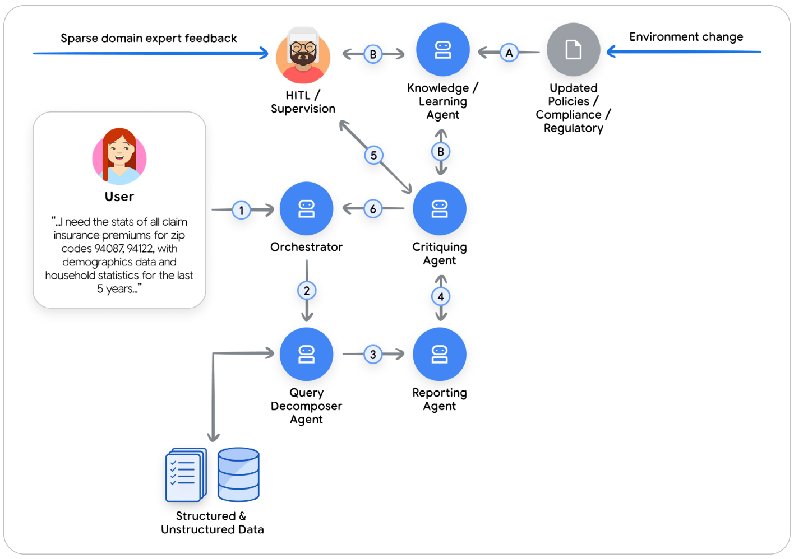
- User (用户)：输入查询请求（如索取某区域 5 年内的理赔与人口学数据）。
- Orchestrator (主编排器)：将任务分派给 Query Decomposer Agent 执行底层数据抽取。
- Reporting Agent：起草初始综合报告。
- Critiquing Agent：对照合规库审查；在不确定时上报 HITL / Supervision (人类专家监护)。
- Knowledge / Learning Agent：捕捉人类专家的具体修正指导，归纳提炼后反向更新企业规则库（Updated Policies / Compliance），使整套系统在下一次遇到同类问题时自动应用新规则，无需人类再次介入44。
前沿新天地：模拟环境与 Agent Gym (Simulation and Agent Gym)
上述模式属于“在线学习（In-line Learning）”，受限于当前智能体预置的有限资源。当前顶级学术界与 Google Research 正在探索更前沿的方向：建立一套与线上生产完全解耦的“离线演练仿真基地”——Agent Gym（智能体健身房）45。其五大关键特质包括：
- 完全与生产隔离：脱离生产主链路，能够尽情调用任何前沿超强模型及海量算力工具进行离线深造。
- 高仿真模拟环境：提供安全的数字沙箱，智能体可以在虚拟数据上进行海量“试错与探索（Trial-and-Error）”，寻找最优解法。
- 高级合成数据发生器：引入红蓝对抗攻防演练（Red-teaming）、动态评测以及一整群苛刻的批评家智能体，极限施压测试智能体的韧性。
- 武器库动态扩充：能够通过 MCP 或 A2A 协议随时学习引入新工具与新概念。
- 连接人类专家知识网络：当遭遇企业特有的“隐性隐晦经验（Tribal Knowledge）”死角时，Agent Gym 能够精准连线人类领域专家答疑解惑，并将专家的认知沉淀为下一阶段的优化基石。
13. 前沿高级智能体实践案例 (Examples of Advanced Agents)
Google Co-Scientist（AI 科学研究助理）
Co-Scientist 是 Google 打造的顶尖科学研究智能体，旨在充当虚拟科研协作者，通过系统性探索高维复杂的科研空间，极大加速人类前沿科学发现的进程。科学家只需设定一个抽象的科学研究目标，提供权威的公开文献与私有实验数据，Co-Scientist 便能自主推演、生成并严格评判一整幅前所未有的新型科学假设全景图谱。
为了攻克如此宏大的课题，Co-Scientist 在底层自动孵化并协同运作着一个庞大的智能体生态系统（见图 8 与图 9）：
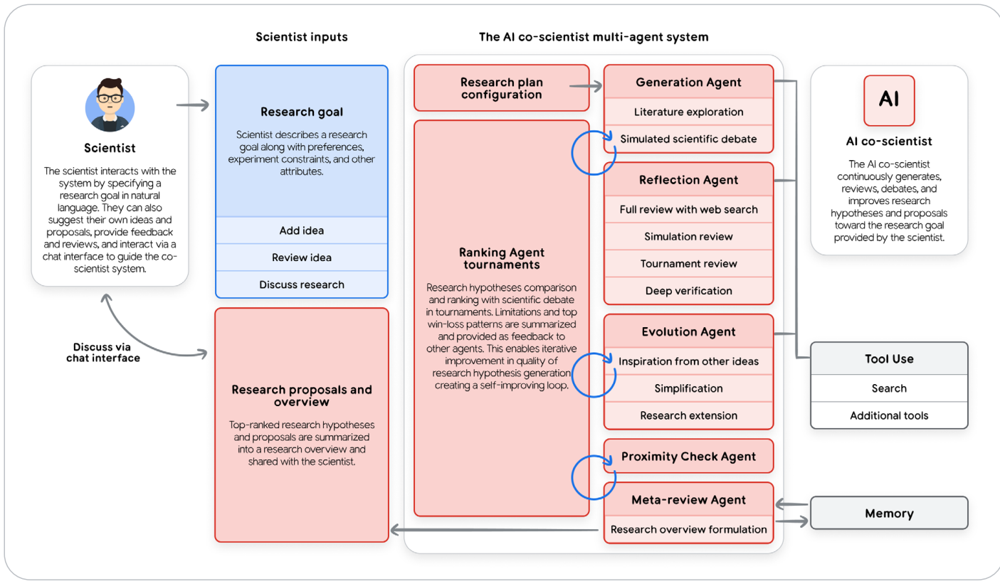
- Scientist Inputs (科学家输入)：通过自然语言定义研究目标（Research Goal）、实验约束边界并提供基础构想。
- Multi-Agent Core System (多智能体核心系统)：
- Research Plan Configuration (研究方案配置)：制定端到端实验方案。
- Generation Agent (假设生成智能体)：广泛探索文献，发起模拟学术辩论。
- Reflection Agent (反思智能体)：结合 Web 搜索全方位复审，开展仿真验证与深度逻辑核验。
- Ranking Agent Tournaments (淘汰锦标赛智能体)：让不同假说展开多轮辩论 PK，分析胜负弱点并反馈驱动生成器迭代。
- Evolution Agent (演进智能体)：跨假说吸取灵感，精简、泛化并拓展科学假说。
- Meta-review Agent (元审阅智能体)：最终汇总输出高质量的完整科研综合概述。
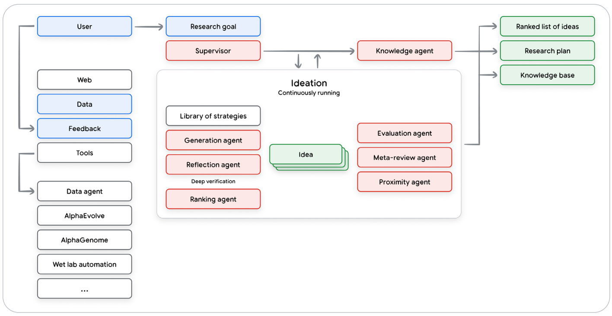
- Supervisor (主管智能体)：全局统筹算力分配、协调各专业子智能体。
- Knowledge Agent (知识智能体)：连接全网文献、湿实验自动化系统（Wet lab automation）、AlphaGenome 与 AlphaEvolve 底座。
- Ideation Loop (持续构想推演回路)：生成器、反思器与淘汰锦标赛闭环运转数小时甚至数天，实现假说质量的螺旋式上升。
AlphaEvolve 智能体
另一个展现极致自主性的前沿系统是 AlphaEvolve——一个专为攻克数学与计算机科学中最严苛算法难题而设计的进化型智能体。AlphaEvolve 将 Gemini 语言模型的创造性代码生成能力，与自动化的高性能评估运行环境深度绑定。它采用达尔文式的演化计算范式：AI 自主生成大批潜在的代码解法候选项，评估器对其进行严苛打分并筛选，最优秀的代码片段作为下一代算法演化的灵感亲本，周而复始迭代演进。
该系统已经在诸多领域取得了突破性科学成果：
- 显著提升了 Google 全球超大规模数据中心的运转能效、加速专用芯片设计并优化 AI 训练集群算力分布；
- 自主发现了计算速度更快的矩阵乘法全新算法；
- 为数个长期悬而未决的世界级数学开放猜想找到了全新解法。
AlphaEvolve 最擅长解决“验证一个解的优劣非常迅速容易，但从零寻找该最优解却极度困难”的 NP 级复杂工程难题。
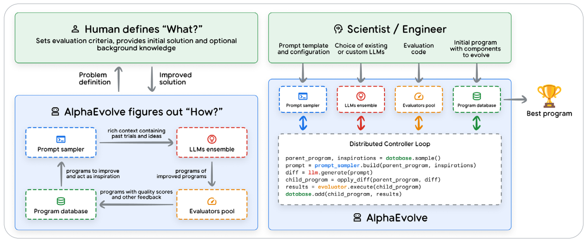
- Human / Engineer (人类工程师定义“做什么”)：设定评估准则、初始代码模板以及目标函数。
- AlphaEvolve (智能体求解“怎么做”)：
- Distributed Controller Loop (分布式调度控制器)：从代码数据库中对优秀程序进行采样。
- LLMs Ensemble (大模型推理集群)：生成针对代码的 diff 变异补丁。
- Evaluators Pool (并行评估器池)：在沙箱中高并发测试性能表现并生成得分反馈。
- Best Program (进化成果)：最终输出超越人类手工极限的终极优化算法。
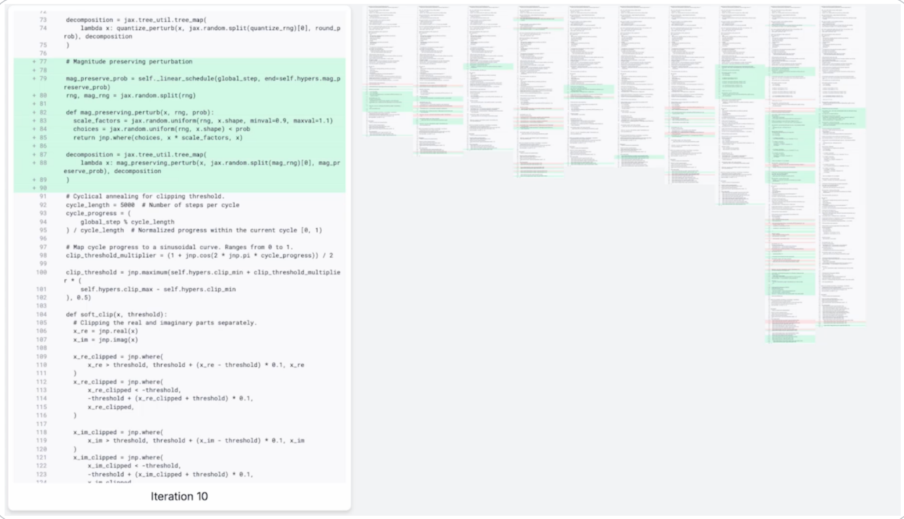
AlphaEvolve 展现了人机深度共生的高级典范：透明易读的算法方案（AI 生成的所有解法全部呈现为人类完全可阅读的清晰代码，工程师随时能理解推导机理并直接二次加工）与专家的前瞻引导（人类负责修正评估指标，防止 AI 钻漏洞走捷径，确保最终成果兼具学术价值与工业落地实用性）。
14. 结语 (Conclusion)
生成式 AI 智能体标志着人工智能历史上的关键里程碑——标志着 AI 正式从一种用于内容生成的被动工具，跃迁为与人类肩并肩、自主解决现实复杂工程难题的能动合作伙伴。本白皮书提供了一套严整的系统框架，助推广大架构师与工程团队跨越实验室的原型玩具阶段，建立起坚不可摧的工业级生产架构体系。
我们将智能体完整拆解为其三大核心拼图：负责深度思考的模型 (Brain)、负责连接现实的工具 (Hands)，以及负责统筹全局的编排层 (Nervous System)。唯有三者在“思考-行动-观察”的无尽闭环中高度有机整合，智能体的真正潜能才得以完全绽放。从 Level 1 的连接型单体，到 Level 3 的集群化多智能体协同，乃至 Level 4 的自主演化，技术领导者如今拥有了清晰的坐标系，能够根据业务现实精准定制推进蓝图。
核心的挑战与机遇，共同孕育在一个全新的开发者范式之中：我们不再是编写微观显式死逻辑的“砌砖工人”，我们正在蜕变为指导、约束、赋能并审视智能体的“总架构师与总导演”。赋予大模型无限潜力的灵活性，恰恰也是其非确定性风险的来源。因此，系统的最终成功，绝不仅仅仰仗最开始写得多么巧妙的单条提示词，而是取决于贯穿全生命周期的严谨工程基石：稳健的工具调用契约、具备弹性的异常容错机制、极其高超的上下文工程裁剪，以及科学严格的指标评估体系。
本文勾勒的原则与架构模式，将成为航行在软件全新大陆上的灯塔。它们引领我们打造出的不再是冷冰冰的僵化工作流，而是具备高度协作力、深厚胜任力与自主敏捷适应力的团队数字化卓越新成员。随着这一技术的持续成熟，唯有坚持严谨的系统化架构工程学，才是全面解锁智能体 AI 颠覆性力量的终极制胜之道。
15. 尾注文献 (Endnotes)
- Julia Wiesinger, Patrick Marlow, et al. 2024 “Agents”. 详见: kaggle.com/whitepaper-agents.
- Antonio Gulli, Lavi Nigam, et al. 2025 “Agents Companion”. 详见: kaggle.com/whitepaper-agent-companion.
- Shunyu Yao, et al., 2022, 'ReAct: Synergizing Reasoning and Acting in Language Models'. 详见: arxiv.org/abs/2210.03629.
- Wei, J., Wang, X. et al., 2023, 'Chain-of-Thought Prompting Elicits Reasoning in Large Language Models'. 详见: arxiv.org/pdf/2201.11903.pdf.
- Shunyu Yao, et al., 2022, 'ReAct: Synergizing Reasoning and Acting in Language Models'. 详见: arxiv.org/abs/2210.03629.
- Agentic System Design 专著: amazon.com/Agentic-Design-Patterns-Hands-Intelligent/dp/3032014018.
- Shunyu Yao, et al., 2024, ‘τ-bench: A Benchmark for Tool-Agent-User Interaction in Real-World Domains’, 详见: arxiv.org/abs/2406.12045.
- 模型效能综合指南: artificialanalysis.ai/guide.
- Vertex AI 模型优化器: cloud.google.com/vertex-ai/.../vertex-ai-model-optimizer.
- Gemini Live 原生多模态全景: gemini.google/overview/gemini-live/.
- Google Cloud Vision API: cloud.google.com/vision.
- Google Cloud Speech-to-Text API: cloud.google.com/speech-to-text.
- Sokratis Kartakis: GenAIOps 实战指南: medium.com/google-cloud/genaiops-operationalize-generative-ai-a-practical-guide.
- Vertex AI Agent Engine 代码执行沙箱: cloud.google.com/vertex-ai/.../code-execution/overview.
- Gemini 函数调用开发文档: ai.google.dev/gemini-api/docs/function-calling.
- 模型上下文协议 (Model Context Protocol): github.com/modelcontextprotocol/.
- Gemini 原生 Google 搜索工具: ai.google.dev/gemini-api/docs/google-search.
- Google Agent Development Kit (ADK) 官方文档: google.github.io/adk-docs/.
- ADK 会话与长期记忆架构: google.github.io/adk-docs/sessions/memory/.
- Google Cloud 智能体设计模式全景: cloud.google.com/architecture/choose-design-pattern-agentic-ai-system.
- Vertex AI Agent Engine 生产级概述: cloud.google.com/vertex-ai/generative-ai/docs/agent-engine/overview.
- GKE 与 Cloud Run 现代化运行时容器: cloud.google.com/kubernetes-engine/docs/concepts/gke-and-cloud-run.
- Google Cloud Agent 开发者入门套件: github.com/GoogleCloudPlatform/agent-starter-pack.
- Sokratis Kartakis: 生产级 GenAI: MLOps 还是 GenAIOps? 详见: medium.com/google-cloud/genai-in-production-mlops-or-genaiops.
- Guangya Liu, Sujay Solomon, 2025 “AI Agent Observability - Evolving Standards and Best Practice”. 详见: opentelemetry.io/blog/2025/ai-agent-observability/.
- Google 开发者论坛：智能体绝非普通工具 (Agents are not tools): discuss.google.dev/t/agents-are-not-tools/192812.
- Damien Masson et. al, 2024, ‘DirectGPT: A Direct Manipulation Interface to Interact with Large Language Models’. 详见: arxiv.org/abs/2310.03691.
- MCP UI: 基于 MCP 控制前端界面的标准: mcpui.dev/.
- AG UI: 智能体事件流与状态同步协议: ag-ui.com/.
- A2UI: 基于结构化输出与 A2A 消息通信的动态 UI 生成协议: github.com/google/A2UI.
- Vertex AI Gemini 2.5 Flash Live API 文档: cloud.google.com/vertex-ai/.../2-5-flash-live-api.
- Google SAIF 智能体专属安全框架: saif.google/focus-on-agents.
- Simon Willison: 提示词注入漏洞深度剖析: simonwillison.net/series/prompt-injection/.
- Google 深度防御研究论文: storage.googleapis.com/.../1018686.pdf.
- SPIFFE 通用微服务身份标准: spiffe.io/.
- 智能体权限策略与安全上下文研究: openreview.net/pdf?id=l9rATNBB8Y.
- ADK 官方安全设计指南: google.github.io/adk-docs/safety/.
- ADK 策略强制执行最佳实践: google.github.io/adk-docs/.../guardrails-policy-enforcement.
- Gemini as a Judge 质检实践指南.
- Google Cloud Model Armor 安全装甲全景: cloud.google.com/security-command-center/docs/model-armor-overview.
- Vertex AI 预置吞吐服务: cloud.google.com/vertex-ai/.../provisioned-throughput/overview.
- Cloud Run 99.9% 生产 SLA: cloud.google.com/run/sla.
- Self-Evolving Agents 开源项目: github.com/CharlesQ9/Self-Evolving-Agents.
- Juraj Gottweis, et. al., 2025, ‘Accelerating scientific breakthroughs with an AI co-scientist’. Google Research: research.google/blog/accelerating-scientific-breakthroughs-with-an-ai-co-scientist/.
- Deepak Nathani et. al. 2025, ‘MLGym: A New Framework and Benchmark for Advancing AI Research Agents’, 详见: arxiv.org/abs/2502.14499.